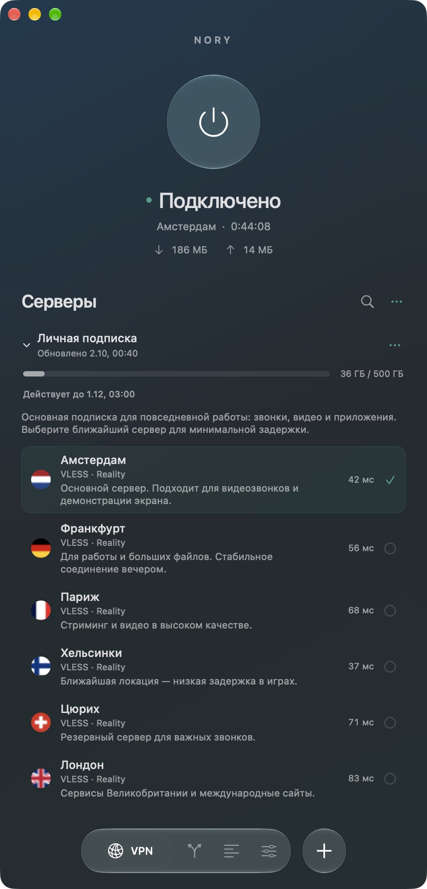

Быстрый
Нативная скорость без сборщика мусора: мгновенный старт и отзывчивый интерфейс.


Никакого тяжёлого рантайма и браузерного движка внутри. Ядро на Rust: нативный код работает быстро, занимает мало места и бережёт ресурсы вашего компьютера.
Нативная скорость без сборщика мусора: мгновенный старт и отзывчивый интерфейс.
Компактное приложение, которое почти не потребляет память и батарею.
Безопасность памяти на уровне языка — меньше ошибок там, где важна приватность.
Включайте VPN одним нажатием. Время сессии и объём трафика, прошедшего через VPN, всегда перед глазами.
Добавьте подписку по ссылке — серверы подтянутся сами. Видно пинг каждой локации, остаток трафика и срок действия.
Включите одну опцию, и российские сайты и IP будут открываться без VPN. Исключения для приложений и отдельных сайтов — в пару кликов.
VPN, маршрутизация, логи и настройки — навигация без лишних экранов.

Изменение правил переподключит активный VPN.
Сайт и его поддомены будут открываться напрямую.
Добавляйте в исключения целые приложения или конкретные процессы. Банковский клиент, игра или рабочий мессенджер — будут ходить в сеть напрямую, а всё остальное — через VPN.
Нажмите на «Приложения» — это интерактивное превью.